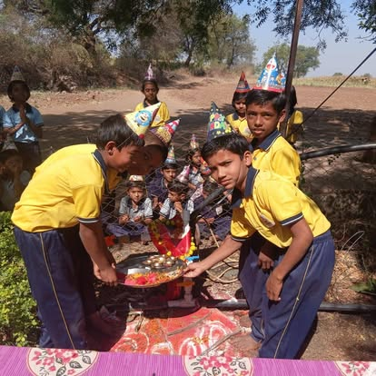
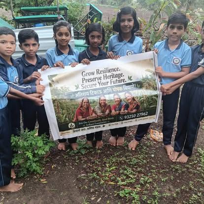
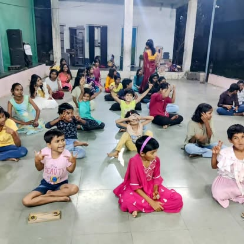

Numbers tell us how many people were reached. Stories help us understand what changed.

In Badak-wasti, dry conditions had made access to water a serious daily challenge for the community. Water scarcity affects far more than household needs — it can affect education, health, livelihoods and community life.
Arihant Foundation supported a borewell water-line initiative to improve access to water for the community.
Improved water access helped create better conditions for community life and education, including the reopening of local schooling.
Sustainable community management and responsible water use remain essential to ensuring that the benefits continue beyond the initial intervention.

Traditional and indigenous seed varieties carry agricultural knowledge, biodiversity and resilience. Yet this heritage can be lost when local knowledge and seed diversity are not passed from one generation to the next.
Through the Arihant Community Seed Bank, children and community members are encouraged to learn about indigenous seeds, their value, preservation and their connection to sustainable agriculture.
The initiative connects education with climate resilience, biodiversity and community heritage — helping young people become custodians of knowledge that belongs to generations before them.
We aim to strengthen community participation, expand awareness around indigenous and climate-resilient seeds, and connect education with sustainable agricultural practices.

Many children need more than classroom instruction. They need spaces where they can ask questions, express themselves, discover their abilities and learn with confidence.
Arihant Foundation's learning circles bring girls and boys together through lessons, stories, creative activities, art and shared learning.
These spaces encourage curiosity, participation, confidence and a stronger sense of belonging.
We aim to strengthen community-based educational engagement and create more opportunities for children to learn beyond the traditional classroom.
Each story is documented where evidence exists, following the same structure: the challenge, our response, the change, and what comes next.
See our impact figures → Annual Reports & Impact → Stories From the Field →